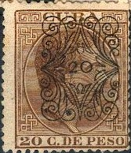
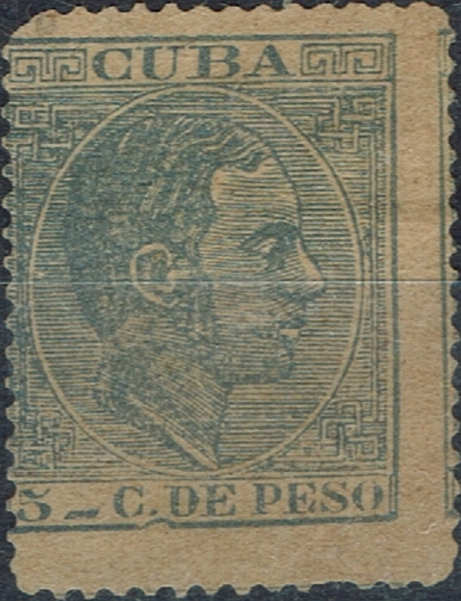
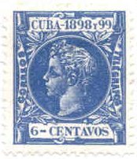
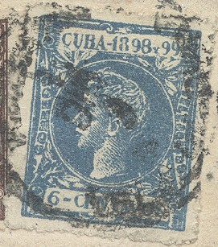
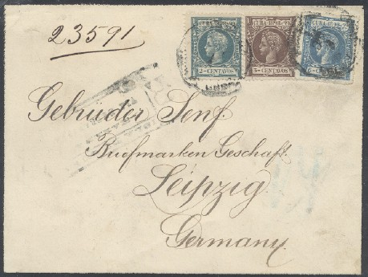
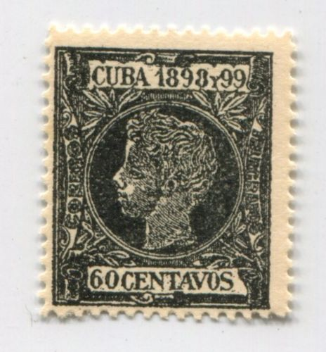

Return To Catalogue - Cuba 1855-1863 (Spanish Westindies) - Cuba 1864-1871 (Spanish Westindies) - Cuba 1873-1879 - Cuba 1899 onwards - Cuba miscellaneous
Note: on my website many of the
pictures can not be seen! They are of course present in the
catalogue;
contact me if you want to purchase it.
Inscription "CUBA 1880"
5 c green 10 c red 12 1/2 c grey 25 c blue 50 c brown 1 p brown
These stamps have perforation 14.
Value of the stamps |
|||
vc = very common c = common * = not so common ** = uncommon |
*** = very uncommon R = rare RR = very rare RRR = extremely rare |
||
| Value | Unused | Used | Remarks |
| 5 c | * | *** | |
| 10 c | R | R | |
| 12 1/2 c | * | * | |
| 25 c | c | * | |
| 50 c | c | * | |
| 1 P | * | *** | |
Inscription "CUBA 1881"
1 c green 2 c red 2 1/2 c olive 5 c blue 10 c brown 20 c brown
Value of the stamps |
|||
vc = very common c = common * = not so common ** = uncommon |
*** = very uncommon R = rare RR = very rare RRR = extremely rare |
||
| Value | Unused | Used | Remarks |
| 1 c | c | * | |
| 2 c | *** | R | |
| 2 1/2 c | * | ** | |
| 5 c | c | * | |
| 10 c | * | * | |
| 20 c | * | ** | |
Inscription "CUBA"

1 c green 2 c red 2 1/2 c brown 2 1/2 c lilac 5 c blue 10 c olive 10 c brown 10 c blue 20 c brown 20 c grey
Value of the stamps |
|||
vc = very common c = common * = not so common ** = uncommon |
*** = very uncommon R = rare RR = very rare RRR = extremely rare |
||
| Value | Unused | Used | Remarks |
| 1 c | * | * | |
| 2 c | * | ** | |
| 2 1/2 c brown | * | * | Colour shades exist |
| 2 1/2 c lilac | * | * | Colour shades exist |
| 5 c | * | * | |
| 10 c olive | * | * | |
| 10 c brown | *** | ** | |
| 10 c blue | * | * | |
| 20 c brown | R | R | |
| 20 c grey | * | ** | Colour shades exist |
Overprinted with a fancy pattern to distinguish stolen stamps from those issued by the post office.



5 on 5 c grey (5 different overprints, all in red) 10 on 10 c olive (5 different overprints, all in blue) 20 on 20 c brown (5 different overprints)
The different surcharges seem to exist on the same sheet. Errors and inverted overprints exist.
Value of the stamps |
|||
vc = very common c = common * = not so common ** = uncommon |
*** = very uncommon R = rare RR = very rare RRR = extremely rare |
||
| Value | Unused | Used | Remarks |
| Cheapest types | |||
| 5 on 5 c | * | * | |
| 10 on 10 c | * | * | |
| 20 on 20 c | ** | *** | |
Forged overprints exist, example:

Newspaper stamps inscription 'CUBA-IMPRESOS' (1888)

1/2 m black 1 m black 2 m black 3 m black 4 m black 8 m black
Value of the stamps |
|||
vc = very common c = common * = not so common ** = uncommon |
*** = very uncommon R = rare RR = very rare RRR = extremely rare |
||
| Value | Unused | Used | Remarks |
| 1/2 m | * | * | |
| 1 m | * | * | |
| 2 m | * | * | |
| 3 m | * | ** | |
| 4 m | * | ** | |
| 8 m | * | ** | |
Forgeries, examples:
I've been told that the next stamps are postal forgeries, note that the "C" of "CUBA" is more open than in the genuine stamps.

(Postal forgery)
(Other postal forgeries)

A forgery of the 5 c value with a very thin "-" behind
the "5"
Forged overprint made by Fournier (image taken from a Fournier
Album of Philatelic Forgeries).

Left genuine stamp, right imperforate Segui forgery.

1 c brown 1 c grey 1 c blue 1 c violet 2 c red 2 c blue 2 c brown 2 1/2 c green 2 1/2 c orange 2 1/2 c violet 2 1/2 c red 5 c olive 5 c green 5 c blue 10 c brown 10 c red 10 c green 20 c violet 20 c blue 20 c brown 40 c brown 80 c brown
Value of the stamps |
|||
vc = very common c = common * = not so common ** = uncommon |
*** = very uncommon R = rare RR = very rare RRR = extremely rare |
||
| Value | Unused | Used | Remarks |
| 1 c brown | * | c | |
| 1 c grey | c | c | |
| 1 c blue | vc | vc | |
| 1 c violet | vc | vc | |
| 2 c red | vc | c | Two shades of red were issued |
| 2 c blue | c | c | |
| 2 c brown | c | c | |
| 2 1/2 c green | * | c | |
| 2 1/2 c orange | * | * | |
| 2 1/2 c violet | c | c | |
| 2 1/2 c red | vc | c | |
| 5 c olive | c | c | |
| 5 c green | c | vc | |
| 5 c blue | vc | c | |
| 10 c brown | * | c | |
| 10 c red | c | vc | |
| 10 c green | vc | c | |
| 20 c violet | * | * | |
| 20 c blue | * | * | |
| 20 c brown | c | c | |
| 40 c | ** | ** | |
| 80 c | *** | *** | |
Newspaper stamps, inscription "CUBA-IMPRESOS" (1890-1896)
1/2 m brown 1/2 m violet 1/2 m red 1/2 m blue 1 m brown 1 m violet 1 m red 1 m blue 2 m brown 2 m violet 2 m red 2 m blue 3 m brown 3 m violet 3 m red 3 m blue 4 m brown 4 m violet 4 m red 4 m blue 8 m brown 8 m violet 8 m red 8 m blue
Value of the stamps |
|||
vc = very common c = common * = not so common ** = uncommon |
*** = very uncommon R = rare RR = very rare RRR = extremely rare |
||
| Value | Unused | Used | Remarks |
| 1/2 m brown | vc | c | |
| 1/2 m violet | vc | c | |
| 1/2 m red | vc | vc | |
| 1/2 m blue | vc | c | |
| 1 m brown | vc | c | |
| 1 m violet | vc | c | |
| 1 m red | vc | vc | |
| 1 m blue | vc | c | |
| 2 m brown | vc | c | |
| 2 m violet | vc | c | |
| 2 m red | vc | c | |
| 2 m blue | c | c | |
| 3 m brown | c | c | |
| 3 m violet | c | c | |
| 3 m red | vc | c | |
| 3 m blue | vc | c | |
| 4 m brown | c | * | |
| 4 m violet | * | * | |
| 4 m red | c | c | |
| 4 m blue | c | c | |
| 8 m brown | * | * | |
| 8 m violet | * | * | |
| 8 m red | c | c | |
| 8 m blue | c | c | |
A postal forgery of the 5 c green postage stamp exists. It has a badly done "A" of "CUBA" and an extra short line in the central oval just above the 'E' of 'DE'. There is also some difference in the upper left corner ornaments (see http://www.asociacionfilatelicapinedademar.com/cuba/falsospos/f1890.html for more details. The forgeries exist in different shades of green and appeared in 1890-1891.
Genuine stamp on the left, forgery on the right, note the extra
horizontal line in the forgery at the bottom (image of the
forgery obtained from the above mentioned site).

Genuine upper left corner ornament on the left, forgery on the
right (images obtained from the above mentioned site).
Local Puerto Principe overprint on a 2 m stamp overprinted with "HABILITADO 3 cents.":
Local Puerto Principe overprint (sometimes referred to as
Carpenter issue).
I have also seen the 3 c on 8 m value with the same overprint. Furthermore the 1 c on 1 m, 3 c on 1 m, 3 c on 2 m, 3 c on 3 m, 5 c on 1 m, 5 c on 2 m, 5 c on 3 m, 5 c on 4 m, 5 c on 8 m, 5 c on 1/2 c, 5 c on 5 m. All genuine overprints are RR to RRR. See http://www.philat.com/FIL/Pto-Principe/3rdPrintingChart.html for more information.
Forged overprints made by Fournier (image taken from a Fournier
Album of Philatelic Forgeries). Probably used to create the rare
provisionals.




1 m brown 2 m brown 3 m brown 4 m brown 5 m brown 1 c violet 2 c green 3 c brown 4 c orange 5 c red 6 c blue 8 c brown 10 c red 15 c olive 20 c brown 40 c violet 60 c black 80 c brown 1 p green 2 p blue
Value of the stamps |
|||
vc = very common c = common * = not so common ** = uncommon |
*** = very uncommon R = rare RR = very rare RRR = extremely rare |
||
| Value | Unused | Used | Remarks |
| 1 m | vc | c | |
| 2 m | vc | c | |
| 3 m | vc | c | |
| 4 m | * | * | |
| 5 m | vc | c | |
| 1 c | vc | c | |
| 2 c | vc | c | |
| 3 c | vc | vc | |
| 4 c | * | * | |
| 5 c | c | c | Exists imperforate |
| 6 c | vc | c | Exists imperforate |
| 8 c | * | * | |
| 10 c | c | * | |
| 15 c | * | * | |
| 20 c | c | c | |
| 40 c | * | * | |
| 60 c | * | * | |
| 80 c | * | ** | |
| 1 P | ** | *** | |
| 2 P | ** | *** | |
These stamps were declared invalid on the 1st January 1899.

(local Puerto Principe issue or 'Carpenter issue', overprinted
"HABILITADO 3 cents." on a 2 m stamp)

I've been told that this 5 cents on 2 m is genuine
I have also seen similar overprints in the values: 2 c on 2 m, 3 c on 3 m, 5 c on 2 m and 5 c on 5 m. Furthermore the values 1 c on 1 m, 3 c (red) on 1 c, 3 c on 2 m, 5 c on 1/2 m, 5 c on 1 m and 5 c on 3 m, 5 c (red) on 1 c and 10 c (red) on 1 c should exist. Most of these overprints are forged. All genuine overprints are RR to RRR. See http://www.philat.com/FIL/Pto-Principe/1stPrintingChart.html for more information.
Postal forgeries exist of the values 3 c and 6 c, which appeared towards the end of 1898. Most (if not all) were used in Havana. Uncancelled postal forgeries are extremely rare:

Left genuine stamp, right postal forgery of the 6 c value. The
inscription "CUBA - 1898 y 99" is very badly done.
Image obtained from:
http://www.philat.com/FIL/1890-1898/Cuba--King%20Alfonso%20XIII%20Issues%201898--6%20cents--Postal%20Forgery.pdf

I have not yet been able to obtain an image of
the postal forgery of the 3 c value. A detailed description can
be found in 'The Cuban Philatelist' of January 1998 (available
online). It says that the 3 c postal forgery is slightly larger
than the genuine stamp, that it is poorly lithographed, it has
bad perforation and irregular lettering.
The 6 c postal forgery value has also poor perforation, is
slightly larger than the genuine stamp and has also bad
lettering. The color is too faded. A picture of the above shown
envelope can also be found here (together with other known
letters with postal forgeries).
Philatelic forgeries were made by the forger Francois Fournier. He made forgeries of at least the 60 c, 80 c, 1 P and 2 P stamps. I don't know the distinguishing charcteristics, although the lettering doesn't look as neat as the genuine stamps to me. He probably used the forged cancels "HABANA 2 JULIO 1898 YSLA DE CUBA", "SANTA CLARA 3 ENERO 1899 YSLA DE CUBA" and "MATANZAS 7 DIC 1898 YSLA DE CUBA" (as they can be found in 'The Fournier Album of Philatelic Forgeries').


Another philatelic forgery exists of the 4 m value (see http://www.philat.com/FIL/Collections/ROBEP8905-1898.pdf). It has short letters and misssing serifs. For example the "A" is shorter than the "B".


Probably the above mentioned forgery.



Primitive forgeries, they have no "-" between
"CUBA" and "1898".
For stamps of Cuba issued from 1899 onwards, click here.

{kind=link}
{kind=link}
{kind=link}
{kind=link}